CBDC Anti-Surveillance State Act (H.R. 5403)
Bars the Federal Reserve from issuing a central bank digital currency directly to individuals or using one for monetary policy.
- Liberty position
- Yea
- The House voted
- 216 Yea, 192 Nay
- Why Yea is the liberty side
- A yes vote opposed a government-run digital dollar.
Counted under the measure Free markets.
The count
363 current members of Congress were in the House for this vote. Members who have left Congress are not listed.
- On the liberty side
- 181
- 178 Republicans, 2 Democrats, 1 Independent
- Against the liberty side
- 165
- 165 Democrats
- Not counted
- 17
- 4 Republicans, 13 Democrats
On the liberty side
181 current members voted Yea.
- Robert B. AderholtR · Alabama · 4th DistrictA
- Mark AlfordR · Missouri · 4th DistrictA
- Rick W. AllenR · Georgia · 12th DistrictA-
- Mark E. AmodeiR · Nevada · 2nd DistrictA
- Jodey C. ArringtonR · Texas · 19th DistrictA-
- Brian BabinR · Texas · 36th DistrictB+
- Don BaconR · Nebraska · 2nd DistrictA
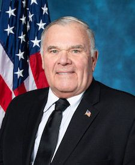
James R. BairdR · Indiana · 4th DistrictA-- Troy BaldersonR · Ohio · 12th DistrictA-
- Jim BanksR · Indiana · SenateA
- Andy BarrR · Kentucky · 6th DistrictA
- Aaron BeanR · Florida · 4th DistrictB
- Cliff BentzR · Oregon · 2nd DistrictA
- Jack BergmanR · Michigan · 1st DistrictA
- Stephanie I. BiceR · Oklahoma · 5th DistrictA
- Andy BiggsR · Arizona · 5th DistrictB-
- Gus M. BilirakisR · Florida · 12th DistrictB+
- Mike BostR · Illinois · 12th DistrictA-
- Josh BrecheenR · Oklahoma · 2nd DistrictB
- Vern BuchananR · Florida · 16th DistrictA
- Tim BurchettR · Tennessee · 2nd DistrictB-
- Eric BurlisonR · Missouri · 7th DistrictB-
- Ken CalvertR · California · 41st DistrictA
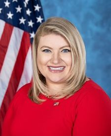
Kat CammackR · Florida · 3rd DistrictB+- Mike CareyR · Ohio · 15th DistrictA
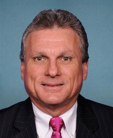
Earl L. "Buddy" CarterR · Georgia · 1st DistrictA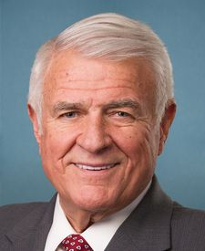
John R. CarterR · Texas · 31st DistrictA- Juan CiscomaniR · Arizona · 6th DistrictA
- Ben ClineR · Virginia · 6th DistrictB
- Michael CloudR · Texas · 27th DistrictB
- Andrew S. ClydeR · Georgia · 9th DistrictB
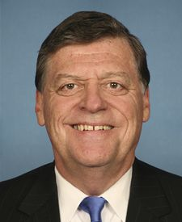
Tom ColeR · Oklahoma · 4th DistrictA- Mike CollinsR · Georgia · 10th DistrictB+
- James ComerR · Kentucky · 1st DistrictB+
 Elijah CraneR · Arizona · 2nd DistrictC
Elijah CraneR · Arizona · 2nd DistrictC- Eric A. "Rick" CrawfordR · Arkansas · 1st DistrictA
- Dan CrenshawR · Texas · 2nd DistrictB+
- John R. CurtisR · Utah · SenateA
- Warren DavidsonR · Ohio · 8th DistrictB
- Monica De La CruzR · Texas · 15th DistrictA-
- Scott DesJarlaisR · Tennessee · 4th DistrictB+
- Mario Diaz-BalartR · Florida · 26th DistrictA
- Byron DonaldsR · Florida · 19th DistrictB+
- Neal P. DunnR · Florida · 2nd DistrictA
- Chuck EdwardsR · North Carolina · 11th DistrictA
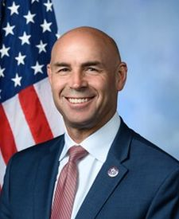
Jake EllzeyR · Texas · 6th DistrictA- Tom EmmerR · Minnesota · 6th DistrictA
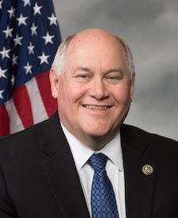
Ron EstesR · Kansas · 4th DistrictA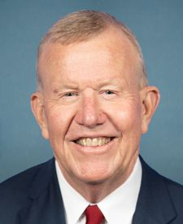
Mike EzellR · Mississippi · 4th DistrictA-- Pat FallonR · Texas · 4th DistrictA-
- Randy FeenstraR · Iowa · 4th DistrictA
- Brad FinstadR · Minnesota · 1st DistrictB+
- Michelle FischbachR · Minnesota · 7th DistrictB+
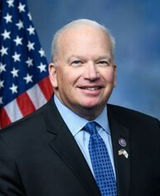
Scott FitzgeraldR · Wisconsin · 5th DistrictA-- Brian K. FitzpatrickR · Pennsylvania · 1st DistrictB+
- Charles J. "Chuck" FleischmannR · Tennessee · 3rd DistrictA
- Mike FloodR · Nebraska · 1st DistrictA
- Virginia FoxxR · North Carolina · 5th DistrictA
- Scott FranklinR · Florida · 18th DistrictA
- Russell FryR · South Carolina · 7th DistrictB+
- Russ FulcherR · Idaho · 1st DistrictB+
- Andrew R. GarbarinoR · New York · 2nd DistrictA
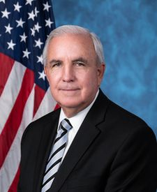
Carlos A. GimenezR · Florida · 28th DistrictA- Marie Gluesenkamp PerezD · Washington · 3rd DistrictC
- Jared F. GoldenD · Maine · 2nd DistrictD
- Lance GoodenR · Texas · 5th DistrictA-
- Paul A. GosarR · Arizona · 9th DistrictB-
- Sam GravesR · Missouri · 6th DistrictA-
- H. Morgan GriffithR · Virginia · 9th DistrictB+
- Glenn GrothmanR · Wisconsin · 6th DistrictA-
- Michael GuestR · Mississippi · 3rd DistrictA-
- Brett GuthrieR · Kentucky · 2nd DistrictA
- Harriet M. HagemanR · Wyoming · At largeB
- Andy HarrisR · Maryland · 1st DistrictB+
- Diana HarshbargerR · Tennessee · 1st DistrictB+
- Kevin HernR · Oklahoma · 1st DistrictB+
- Clay HigginsR · Louisiana · 3rd DistrictB
- J. French HillR · Arkansas · 2nd DistrictA
- Ashley HinsonR · Iowa · 2nd DistrictA
- Erin HouchinR · Indiana · 9th DistrictA
- Richard HudsonR · North Carolina · 9th DistrictA
- Bill HuizengaR · Michigan · 4th DistrictA
- Wesley HuntR · Texas · 38th DistrictB
- Darrell IssaR · California · 48th DistrictA
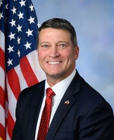
Ronny JacksonR · Texas · 13th DistrictA-- John JamesR · Michigan · 10th DistrictA
- Dusty JohnsonR · South Dakota · At largeA
- Mike JohnsonR · Louisiana · 4th DistrictA-
- Jim JordanR · Ohio · 4th DistrictA-
- David P. JoyceR · Ohio · 14th DistrictA
- John JoyceR · Pennsylvania · 13th DistrictA-
- Thomas H. Kean, Jr.R · New Jersey · 7th DistrictA
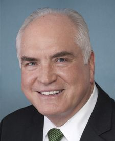
Mike KellyR · Pennsylvania · 16th DistrictA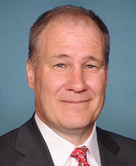
Trent KellyR · Mississippi · 1st DistrictA- Jennifer A. KiggansR · Virginia · 2nd DistrictA
- Kevin KileyI · California · 3rd DistrictA
- Young KimR · California · 40th DistrictA
- David KustoffR · Tennessee · 8th DistrictA
- Darin LaHoodR · Illinois · 16th DistrictA
- Nick LaLotaR · New York · 1st DistrictA
- Nicholas A. LangworthyR · New York · 23rd DistrictA-
- Robert E. LattaR · Ohio · 5th DistrictA
- Michael LawlerR · New York · 17th DistrictA
- Laurel M. LeeR · Florida · 15th DistrictA
- Julia LetlowR · Louisiana · 5th DistrictA
- Frank D. LucasR · Oklahoma · 3rd DistrictA
- Anna Paulina LunaR · Florida · 13th DistrictB-
- Morgan LuttrellR · Texas · 8th DistrictA-
- Nancy MaceR · South Carolina · 1st DistrictA-
- Nicole MalliotakisR · New York · 11th DistrictA
- Celeste MaloyR · Utah · 2nd DistrictB+
- Tracey MannR · Kansas · 1st DistrictB+
- Thomas MassieR · Kentucky · 4th DistrictF
- Brian J. MastR · Florida · 21st DistrictB+
- Michael T. McCaulR · Texas · 10th DistrictA
- Tom McClintockR · California · 5th DistrictB+
- Richard McCormickR · Georgia · 7th DistrictA
- Daniel MeuserR · Pennsylvania · 9th DistrictA-
- Carol D. MillerR · West Virginia · 1st DistrictA
- Mary E. MillerR · Illinois · 15th DistrictB
- Max L. MillerR · Ohio · 7th DistrictA
- Mariannette Miller-MeeksR · Iowa · 1st DistrictA-
- Cory MillsR · Florida · 7th DistrictB
- John R. MoolenaarR · Michigan · 2nd DistrictA-
- Barry MooreR · Alabama · 1st DistrictB+
- Blake D. MooreR · Utah · 1st DistrictA
- Nathaniel MoranR · Texas · 1st DistrictA
- Troy E. NehlsR · Texas · 22nd DistrictB-
- Dan NewhouseR · Washington · 4th DistrictA
- Ralph NormanR · South Carolina · 5th DistrictB-
- Zachary NunnR · Iowa · 3rd DistrictA
- Jay ObernolteR · California · 23rd DistrictA-
- Andrew OglesR · Tennessee · 5th DistrictB
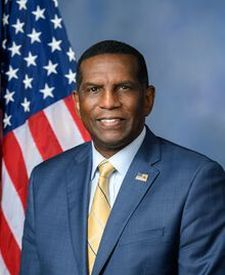
Burgess OwensR · Utah · 4th DistrictA-- Gary J. PalmerR · Alabama · 6th DistrictA-
- Scott PerryR · Pennsylvania · 10th DistrictB
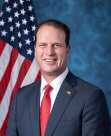
August PflugerR · Texas · 11th DistrictA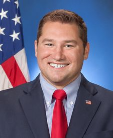
Guy ReschenthalerR · Pennsylvania · 14th DistrictA- Harold RogersR · Kentucky · 5th DistrictA
- Mike RogersR · Alabama · 3rd DistrictA
- John W. RoseR · Tennessee · 6th DistrictA-
- David RouzerR · North Carolina · 7th DistrictA
- Chip RoyR · Texas · 21st DistrictB-
- John H. RutherfordR · Florida · 5th DistrictA
- Maria Elvira SalazarR · Florida · 27th DistrictA
- Steve ScaliseR · Louisiana · 1st DistrictA
- David SchweikertR · Arizona · 1st DistrictA-
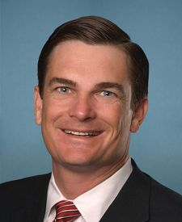
Austin ScottR · Georgia · 8th DistrictA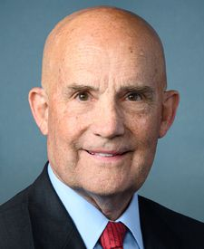
Keith SelfR · Texas · 3rd DistrictB-- Pete SessionsR · Texas · 17th DistrictA-
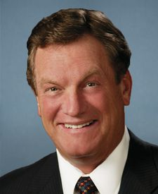
Michael K. SimpsonR · Idaho · 2nd DistrictA- Adrian SmithR · Nebraska · 3rd DistrictA
- Christopher H. SmithR · New Jersey · 4th DistrictA
- Jason SmithR · Missouri · 8th DistrictA-
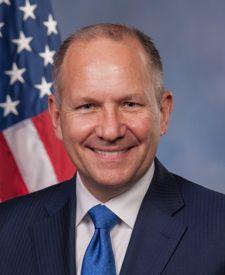
Lloyd SmuckerR · Pennsylvania · 11th DistrictA- Victoria SpartzR · Indiana · 5th DistrictA
- Pete StauberR · Minnesota · 8th DistrictA-
- Elise M. StefanikR · New York · 21st DistrictA
- Bryan SteilR · Wisconsin · 1st DistrictA
 W. Gregory SteubeR · Florida · 17th DistrictC+
W. Gregory SteubeR · Florida · 17th DistrictC+ Dale W. StrongR · Alabama · 5th DistrictA
Dale W. StrongR · Alabama · 5th DistrictA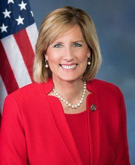
Claudia TenneyR · New York · 24th DistrictA- Glenn ThompsonR · Pennsylvania · 15th DistrictA
- Thomas P. TiffanyR · Wisconsin · 7th DistrictB
- William R. Timmons IVR · South Carolina · 4th DistrictB+
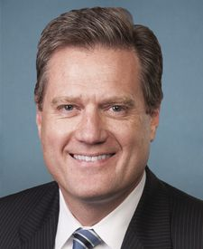
Michael R. TurnerR · Ohio · 10th DistrictA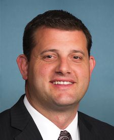
David G. ValadaoR · California · 22nd DistrictA- Jefferson Van DrewR · New Jersey · 2nd DistrictB+
- Beth Van DuyneR · Texas · 24th DistrictA-
- Derrick Van OrdenR · Wisconsin · 3rd DistrictA
- Ann WagnerR · Missouri · 2nd DistrictA
- Tim WalbergR · Michigan · 5th DistrictA
- Randy K. Weber, Sr.R · Texas · 14th DistrictB+
- Daniel WebsterR · Florida · 11th DistrictA-
- Bruce WestermanR · Arkansas · 4th DistrictA
- Roger WilliamsR · Texas · 25th DistrictB+
- Joe WilsonR · South Carolina · 2nd DistrictA
- Robert J. WittmanR · Virginia · 1st DistrictA
- Steve WomackR · Arkansas · 3rd DistrictA
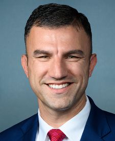
Rudy Yakym IIIR · Indiana · 2nd DistrictA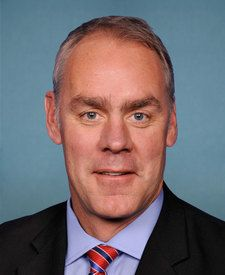
Ryan K. ZinkeR · Montana · 1st DistrictA-
Against the liberty side
165 current members voted Nay.
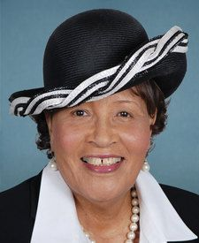
Alma S. AdamsD · North Carolina · 12th DistrictF- Pete AguilarD · California · 33rd DistrictF
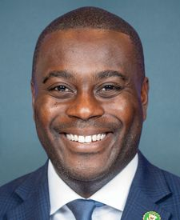
Gabe AmoD · Rhode Island · 1st DistrictF- Jake AuchinclossD · Massachusetts · 4th DistrictF
- Becca BalintD · Vermont · At largeF
- Nanette Diaz BarragánD · California · 44th DistrictF
- Ami BeraD · California · 6th DistrictF
- Donald S. Beyer, Jr.D · Virginia · 8th DistrictF
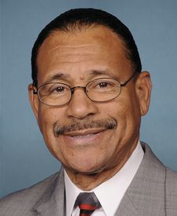
Sanford D. Bishop, Jr.D · Georgia · 2nd DistrictF- Lisa Blunt RochesterD · Delaware · SenateF
- Suzanne BonamiciD · Oregon · 1st DistrictF
- Brendan F. BoyleD · Pennsylvania · 2nd DistrictF
- Shontel M. BrownD · Ohio · 11th DistrictF
- Julia BrownleyD · California · 26th DistrictF
- Nikki BudzinskiD · Illinois · 13th DistrictF
- Salud O. CarbajalD · California · 24th DistrictF
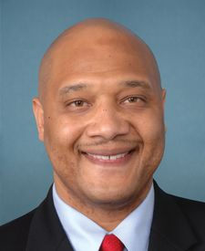
André CarsonD · Indiana · 7th DistrictF- Troy A. CarterD · Louisiana · 2nd DistrictF
- Greg CasarD · Texas · 35th DistrictF
- Ed CaseD · Hawaii · 1st DistrictF
- Sean CastenD · Illinois · 6th DistrictF
- Kathy CastorD · Florida · 14th DistrictF
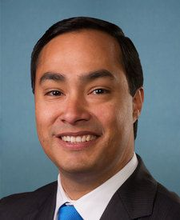
Joaquin CastroD · Texas · 20th DistrictF- Judy ChuD · California · 28th DistrictF
- Katherine M. ClarkD · Massachusetts · 5th DistrictF
- Yvette D. ClarkeD · New York · 9th DistrictF
- James E. ClyburnD · South Carolina · 6th DistrictF
- Steve CohenD · Tennessee · 9th DistrictF
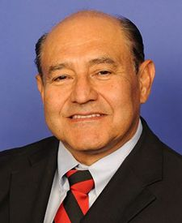
J. Luis CorreaD · California · 46th DistrictF- Jim CostaD · California · 21st DistrictF
- Joe CourtneyD · Connecticut · 2nd DistrictF
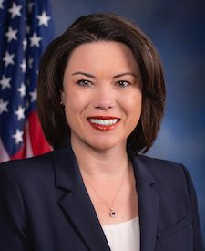
Angie CraigD · Minnesota · 2nd DistrictF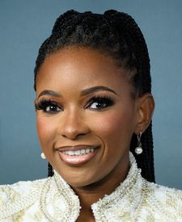
Jasmine CrockettD · Texas · 30th DistrictF- Jason CrowD · Colorado · 6th DistrictF
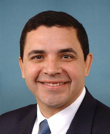
Henry CuellarD · Texas · 28th DistrictF- Sharice DavidsD · Kansas · 3rd DistrictF
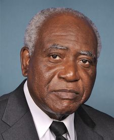
Danny K. DavisD · Illinois · 7th DistrictF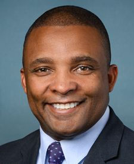
Donald G. DavisD · North Carolina · 1st DistrictC-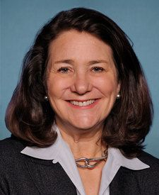
Diana DeGetteD · Colorado · 1st DistrictF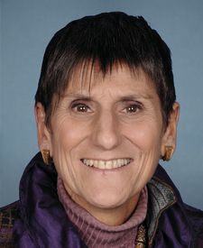
Rosa L. DeLauroD · Connecticut · 3rd DistrictF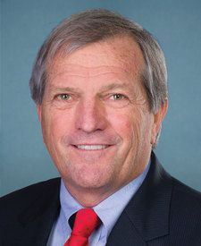
Mark DeSaulnierD · California · 10th DistrictF- Madeleine DeanD · Pennsylvania · 4th DistrictF
- Suzan K. DelBeneD · Washington · 1st DistrictF
- Christopher R. DeluzioD · Pennsylvania · 17th DistrictF
- Debbie DingellD · Michigan · 6th DistrictF
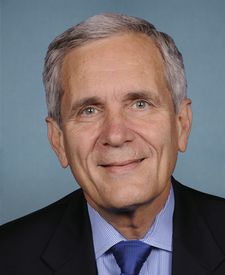
Lloyd DoggettD · Texas · 37th DistrictF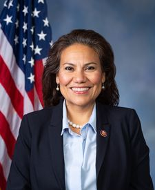
Veronica EscobarD · Texas · 16th DistrictF- Adriano EspaillatD · New York · 13th DistrictF
- Lizzie FletcherD · Texas · 7th DistrictF
- Bill FosterD · Illinois · 11th DistrictF
- Valerie P. FousheeD · North Carolina · 4th DistrictF
- Maxwell FrostD · Florida · 10th DistrictF
- Ruben GallegoD · Arizona · SenateF
- John GaramendiD · California · 8th DistrictF
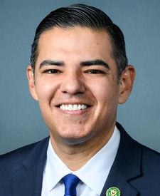
Robert GarciaD · California · 42nd DistrictF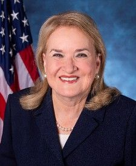
Sylvia R. GarciaD · Texas · 29th DistrictF- Jesús G. "Chuy" GarcíaD · Illinois · 4th DistrictF
- Daniel S. GoldmanD · New York · 10th DistrictF
- Jimmy GomezD · California · 34th DistrictF
- Vicente GonzalezD · Texas · 34th DistrictF
- Josh GottheimerD · New Jersey · 5th DistrictF
- Josh HarderD · California · 9th DistrictF
- Jahana HayesD · Connecticut · 5th DistrictF
 James A. HimesD · Connecticut · 4th DistrictF
James A. HimesD · Connecticut · 4th DistrictF- Steven HorsfordD · Nevada · 4th DistrictF
- Chrissy HoulahanD · Pennsylvania · 6th DistrictF
- Steny H. HoyerD · Maryland · 5th DistrictF
- Val T. HoyleD · Oregon · 4th DistrictF
- Jared HuffmanD · California · 2nd DistrictF
- Glenn IveyD · Maryland · 4th DistrictF
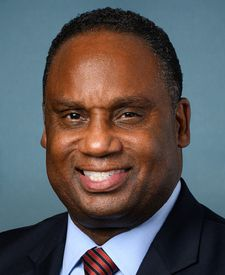
Jonathan L. JacksonD · Illinois · 1st DistrictF- Sara JacobsD · California · 51st DistrictF
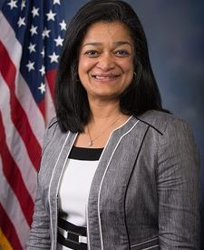
Pramila JayapalD · Washington · 7th DistrictF- Hakeem S. JeffriesD · New York · 8th DistrictF
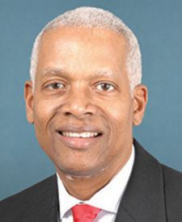
Henry C. "Hank" Johnson, Jr.D · Georgia · 4th DistrictF- Sydney Kamlager-DoveD · California · 37th DistrictF
- Marcy KapturD · Ohio · 9th DistrictF
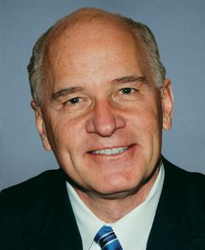
William R. KeatingD · Massachusetts · 9th DistrictF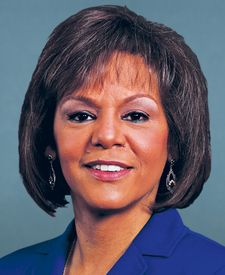
Robin L. KellyD · Illinois · 2nd DistrictF- Timothy M. KennedyD · New York · 26th DistrictF
- Ro KhannaD · California · 17th DistrictF
- Raja KrishnamoorthiD · Illinois · 8th DistrictF
- Rick LarsenD · Washington · 2nd DistrictF
- John B. LarsonD · Connecticut · 1st DistrictF
- Summer L. LeeD · Pennsylvania · 12th DistrictF
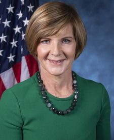
Susie LeeD · Nevada · 3rd DistrictF- Teresa Leger FernandezD · New Mexico · 3rd DistrictF
- Mike LevinD · California · 49th DistrictF
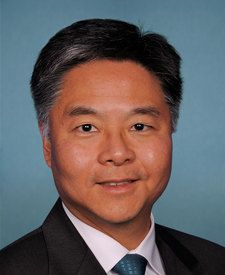
Ted LieuD · California · 36th DistrictF- Zoe LofgrenD · California · 18th DistrictF
- Stephen F. LynchD · Massachusetts · 8th DistrictF
- Doris O. MatsuiD · California · 7th DistrictF
- Lucy McBathD · Georgia · 6th DistrictF
- Jennifer L. McClellanD · Virginia · 4th DistrictF
- Betty McCollumD · Minnesota · 4th DistrictF
- Morgan McGarveyD · Kentucky · 3rd DistrictF
- James P. McGovernD · Massachusetts · 2nd DistrictF
- Gregory W. MeeksD · New York · 5th DistrictF
- Robert MenendezD · New Jersey · 8th DistrictF
- Grace MengD · New York · 6th DistrictF
- Kweisi MfumeD · Maryland · 7th DistrictF
- Joseph D. MorelleD · New York · 25th DistrictF
- Jared MoskowitzD · Florida · 23rd DistrictD-
- Seth MoultonD · Massachusetts · 6th DistrictF
- Frank J. MrvanD · Indiana · 1st DistrictF
- Kevin MullinD · California · 15th DistrictF
- Jerrold NadlerD · New York · 12th DistrictF
- Richard E. NealD · Massachusetts · 1st DistrictF
- Joe NeguseD · Colorado · 2nd DistrictF
- Donald NorcrossD · New Jersey · 1st DistrictF
- Ilhan OmarD · Minnesota · 5th DistrictF
- Frank Pallone, Jr.D · New Jersey · 6th DistrictF
- Jimmy PanettaD · California · 19th DistrictF
- Chris PappasD · New Hampshire · 1st DistrictF
- Nancy PelosiD · California · 11th DistrictF
- Scott H. PetersD · California · 50th DistrictF
- Brittany PettersenD · Colorado · 7th DistrictF
- Chellie PingreeD · Maine · 1st DistrictF
- Mark PocanD · Wisconsin · 2nd DistrictF
- Ayanna PressleyD · Massachusetts · 7th DistrictF
- Mike QuigleyD · Illinois · 5th DistrictF
- Delia C. RamirezD · Illinois · 3rd DistrictF
- Jamie RaskinD · Maryland · 8th DistrictF
- Deborah K. RossD · North Carolina · 2nd DistrictF
- Raul RuizD · California · 25th DistrictF
- Patrick RyanD · New York · 18th DistrictD
- Andrea SalinasD · Oregon · 6th DistrictF
- Mary Gay ScanlonD · Pennsylvania · 5th DistrictF
- Janice D. SchakowskyD · Illinois · 9th DistrictF
- Adam B. SchiffD · California · SenateF
- Bradley Scott SchneiderD · Illinois · 10th DistrictF
- Hillary J. ScholtenD · Michigan · 3rd DistrictF
- Kim SchrierD · Washington · 8th DistrictF
- Robert C. "Bobby" ScottD · Virginia · 3rd DistrictF
- Terri A. SewellD · Alabama · 7th DistrictF
- Brad ShermanD · California · 32nd DistrictF
- Elissa SlotkinD · Michigan · SenateF
- Adam SmithD · Washington · 9th DistrictF
- Eric SorensenD · Illinois · 17th DistrictF
- Darren SotoD · Florida · 9th DistrictF
- Greg StantonD · Arizona · 4th DistrictF
- Haley M. StevensD · Michigan · 11th DistrictF
- Marilyn StricklandD · Washington · 10th DistrictF
- Thomas R. SuozziD · New York · 3rd DistrictF
- Emilia Strong SykesD · Ohio · 13th DistrictF
- Linda T. SánchezD · California · 38th DistrictF
- Mark TakanoD · California · 39th DistrictF
- Shri ThanedarD · Michigan · 13th DistrictF
- Bennie G. ThompsonD · Mississippi · 2nd DistrictF
- Mike ThompsonD · California · 4th DistrictF
- Dina TitusD · Nevada · 1st DistrictF
- Rashida TlaibD · Michigan · 12th DistrictF
- Jill N. TokudaD · Hawaii · 2nd DistrictF
- Paul TonkoD · New York · 20th DistrictF
- Norma J. TorresD · California · 35th DistrictF
- Lori TrahanD · Massachusetts · 3rd DistrictF
- Lauren UnderwoodD · Illinois · 14th DistrictF
- Juan VargasD · California · 52nd DistrictF
- Gabe VasquezD · New Mexico · 2nd DistrictF
- Marc A. VeaseyD · Texas · 33rd DistrictF
- Debbie Wasserman SchultzD · Florida · 25th DistrictF
- Maxine WatersD · California · 43rd DistrictF
- Bonnie Watson ColemanD · New Jersey · 12th DistrictF
- Nikema WilliamsD · Georgia · 5th DistrictF
- Frederica S. WilsonD · Florida · 24th DistrictF
Not counted
17 current members missed the vote or voted present. Neither counts for or against a member.
- Joyce BeattyD · Ohio · 3rd District · Did not voteF
- Lauren BoebertR · Colorado · 4th District · Did not voteB+
- Emanuel CleaverD · Missouri · 5th District · Did not voteF
- Dwight EvansD · Pennsylvania · 3rd District · Did not voteF
- Lois FrankelD · Florida · 22nd District · Did not voteF
- Al GreenD · Texas · 9th District · Did not voteF
- Andy KimD · New Jersey · Senate · Did not voteF
- Greg LandsmanD · Ohio · 1st District · Did not voteD-
- Barry LoudermilkR · Georgia · 11th District · Did not voteA-
- Seth MagazinerD · Rhode Island · 2nd District · Did not voteF
- Lisa C. McClainR · Michigan · 9th District · Did not voteA
- Gwen MooreD · Wisconsin · 4th District · Did not voteF
- Gregory F. MurphyR · North Carolina · 3rd District · Did not voteA
- Alexandria Ocasio-CortezD · New York · 14th District · Did not voteF
- Melanie A. StansburyD · New Mexico · 1st District · Did not voteF
- Ritchie TorresD · New York · 15th District · Did not voteF
- Nydia M. VelázquezD · New York · 7th District · Did not voteF
Did we call this vote right?
Say it where other readers can answer you. Opinions, videos and corrections about this vote are all in one place.
Discussion
CBDC Anti-Surveillance State Act (H.R. 5403)
We say Yea was the liberty side. Agree, or not? Readers argue it here, in their own words. Not ours, and not checked the way a vote is.
Leave out anything private about anyone. The rules, what your account keeps, and what readers have changed so far
Would you score it differently?
Tell the hosts which vote, and why, on a call. The community meets every day.